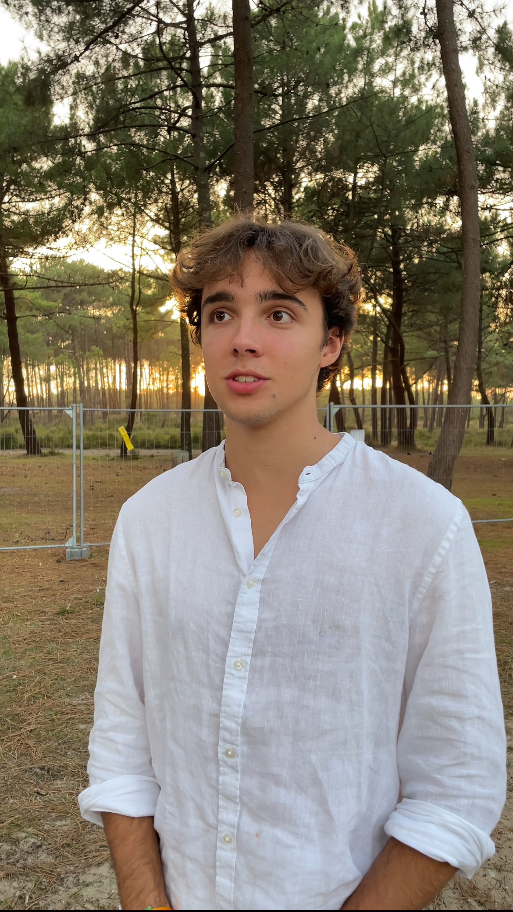

I'm 18 years old, based in Reims and currently studying at a business school. Curious, adaptable and always up for a new challenge, I look to explore fields that combine expertise, human connection and culture.
Reims / Lille IÉSEG School of Management
Living in Reims, at the heart of the Champagne region, I developed a real passion for wine. Vineyards, terroirs, aromas — it's a world I could see myself working in someday.
I competed in two sports at national level: fencing at the French Championship and rugby at national level. Discipline, competition and pushing my limits are part of my DNA.
I spent most of my teenage years outdoors through scouting, building real knowledge of the natural world. Since then, I regularly plan long hikes and treks to recharge and observe wildlife.
A passion since childhood — I follow F1 closely for both its sporting intensity and its constant technological innovation. Every race is an event.
Exploring new countries and discovering different ways of life fascinates me. I've had the chance to travel to Dubai, the USA, England, Morocco, and across Europe.
At high school I specialised in maths, physics and computer science (NSI). These subjects sparked a real interest in technology, coding logic and how digital systems work — including building websites.
I'm studying at IÉSEG School of Management, a leading business school recognised in France and internationally. This programme has introduced me to the world of business, marketing and management, while helping me shape my professional goals.
Visit their website